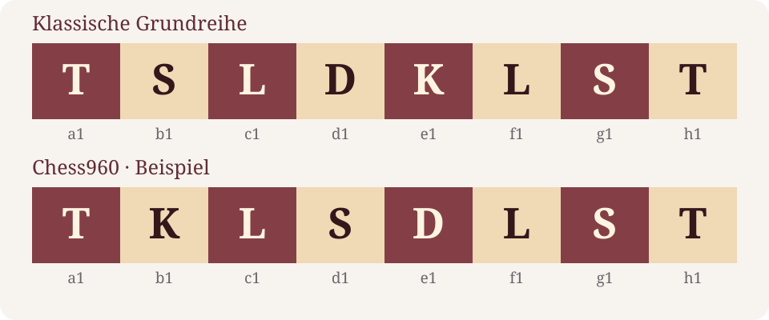

Ein neuer Aufbau, ein vertrautes Ziel: Beim Freestyle-Schach müssen die Spieler schon die Ausgangsstellung frisch beurteilen. Wie reizvoll das im großen Turnierbetrieb sein kann, zeigte das Grenke-Festival vom 2. bis 6. April 2026 in Karlsruhe. Dort wurden klassisches Schach und Freestyle parallel gespielt. Dieser Rückblick erklärt, was an der Variante anders ist – und was Schach bleibt. [4]
Keymer gewinnt – die Feinwertung entscheidet
Vincent Keymer gewann das Grenke Freestyle Chess Open vor dem punktgleichen Maxime Vachier-Lagrave. Den Ausschlag gab die bessere Zweitwertung. Nach Veranstalterangaben erhielten beide jeweils 50.000 Euro; Keymer sicherte sich außerdem einen Qualifikationsplatz für die Freestyle-Weltmeisterschaft im Februar 2027. [1]
Eine Besonderheit der Schlussrunde: Das direkte Duell der beiden Führenden endete früh remis. Auch die Verfolgerpartien Carlsen gegen Chopra und Sarana gegen Duda wurden unentschieden beendet. Freestyle schafft ungewohnte Aufgaben, schließt aber weder Remis noch eine vom Tabellenstand geprägte Turnierstrategie aus. [1]
Was Chess960 verändert
Die hier gespielte Variante wird auch Chess960 genannt. Ihre Grundidee ist eine veränderte Ausgangsstellung der Figuren auf der Grundreihe. Die Bauern beginnen wie gewohnt. Die Läufer stehen auf verschiedenfarbigen Feldern, der König zwischen den beiden Türmen. Schwarz erhält die entsprechende Aufstellung gegenüber. Die Gangarten der Figuren und das Mattziel bleiben erhalten. [2]
Auch die Rochade gehört zum Spiel. Ihre Durchführung hängt von den Startfeldern ab; die Endfelder entsprechen dem klassischen Schach: König g1 und Turm f1 beziehungsweise König c1 und Turm d1, für Schwarz entsprechend auf der achten Reihe. Die üblichen Voraussetzungen müssen berücksichtigt werden. [2]

Weniger vertraute Varianten, weiterhin Vorbereitung
Mit einer anderen Grundstellung verlieren gelernte Zugfolgen aus der üblichen Anfangsstellung ihre direkte Anwendbarkeit. Dafür rücken Fragen nach ungeschützten Figuren, offenen Diagonalen und sicheren Königsfeldern früher in den Vordergrund. Das ist der schachliche Reiz des Formats. Es bedeutet nicht, dass Vorbereitung oder Erfahrung wertlos werden.
Ein konkretes Gegenbeispiel schilderten die Grenke-Veranstalter am vierten Spieltag: Hans Niemann wertete laut dem dort wiedergegebenen Bericht Peter Lekos aufgezeichnete Beratungen von Spielern aus der Freestyle-Tour gezielt aus. Auch in diesem Format lassen sich Ideen sammeln und typische Probleme studieren. [3]
Ein Festival mit einer Verbindung zwischen den Formaten
Dass Klassik und Freestyle beim Grenke-Festival keine getrennten Welten sein mussten, zeigte Daniel Hausrath. Der Großmeister wechselte nach einer erfolgreichen ersten Turnierhälfte aus dem klassischen Wettbewerb ins Freestyle Open. Dort erreichte er gegen Nodirbek Abdusattorov ein Remis. Der Veranstalterbericht dokumentiert damit einen tatsächlich erfolgten Wechsel – keine allgemeine Regel für beliebige Turniere. [3]
Für den klassischen Wettbewerb gab es ebenfalls einen eigenen Sieger: Mukhammadzokhid Suyarov gewann das A-Open. Die Veranstaltung bot somit unterschiedliche sportliche Aufgaben unter einem gemeinsamen Dach. [1]
Freestyle ist eine zusätzliche Form des Wettkampfs. Aus einzelnen spektakulären Partien lässt sich weder eine allgemeine Überlegenheit gegenüber klassischem Schach noch eine dauerhaft niedrigere Remisquote ableiten.
Was Vereinsspieler daraus mitnehmen können
Wer Chess960 ausprobiert, sollte sich zuerst Zeit für die Ausgangsstellung nehmen: Welche Figuren sind gedeckt? Welche Bauernzüge öffnen einen Läufer? Wo könnte der König sicher stehen? Solche Fragen sind aus dem klassischen Schach vertraut, müssen hier aber von Beginn an auf eine andere Anordnung angewendet werden.
Grenke lieferte dafür ein anschauliches Beispiel: Bekannte Spitzenspieler trafen auf neue Aufgaben, Vorbereitung blieb ein Thema, und am Ende entschieden auch Turnierstrategie und Feinwertung. Der Reiz liegt darin, vertrautes Schachwissen in einer ungewohnten Stellung einzusetzen.
Quellen & Stand
Redaktioneller Stand: 5. September 2026. Der Turnierrückblick stützt sich auf die Veranstalterberichte vom April; die Regelerläuterung auf das FIDE-Handbuch. Einordnungen sind als solche kenntlich gemacht.
- Grenke: Abschlussbericht und Sieger · 06.04.2026 ↗
- FIDE: Laws of Chess, Guidelines II – Chess960 Rules ↗
- Grenke: Bericht vom vierten Turniertag · 05.04.2026 ↗
- Grenke: Ausschreibung und Veranstaltungstermin 2026 ↗
Grafiken: eigens für diesen Beitrag erstellt. Keine Fremdfotos oder fremden Verbands- und Veranstalterlogos.